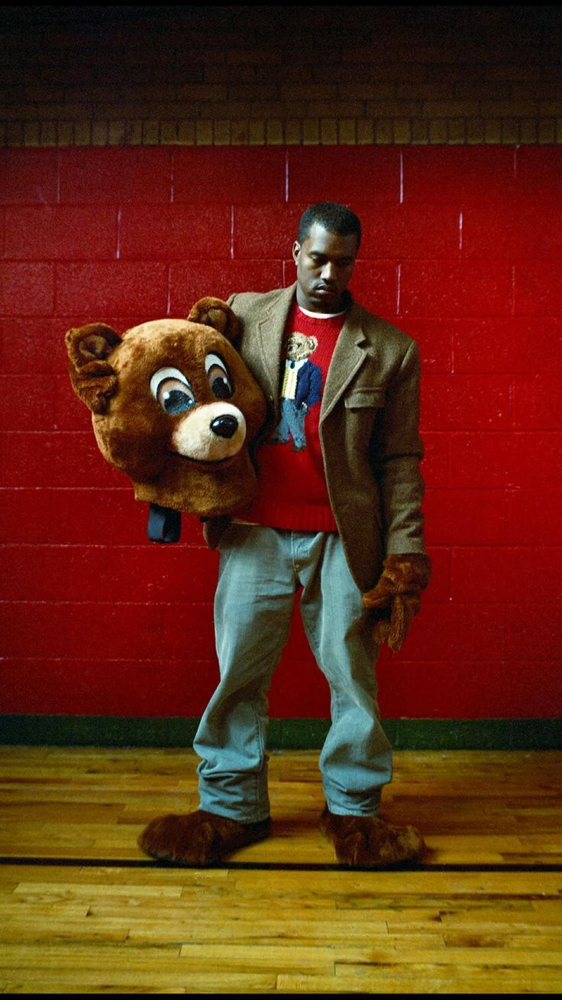
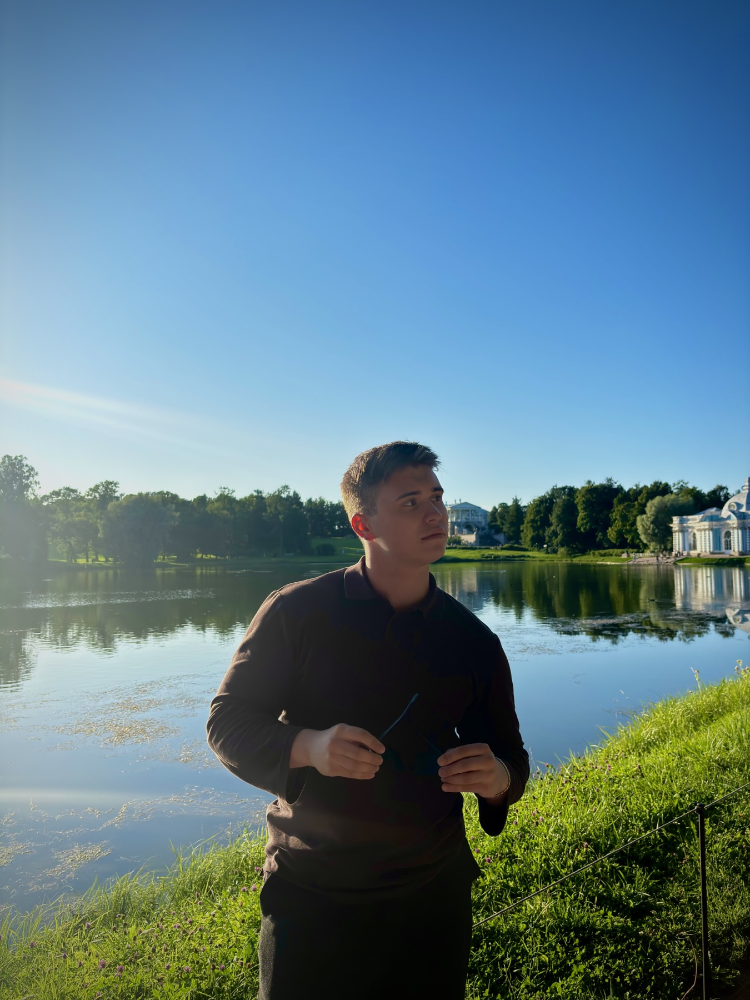
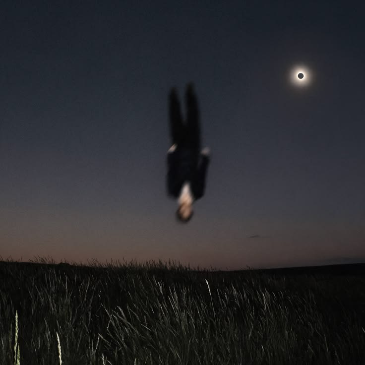
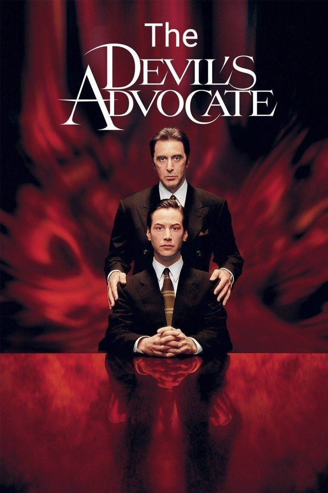
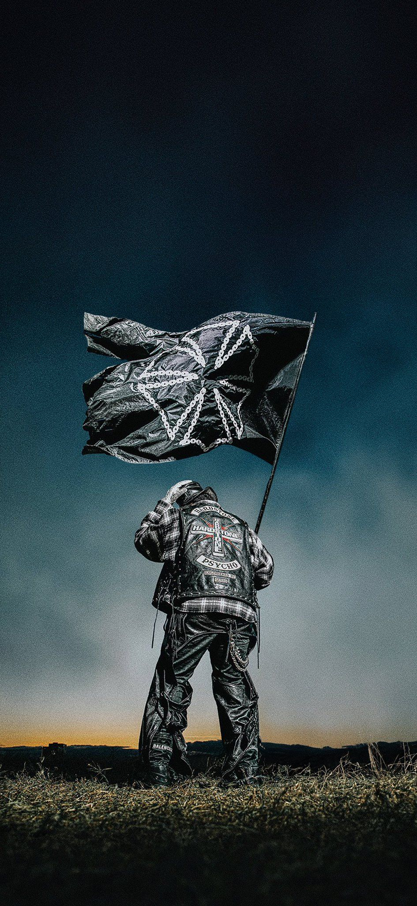
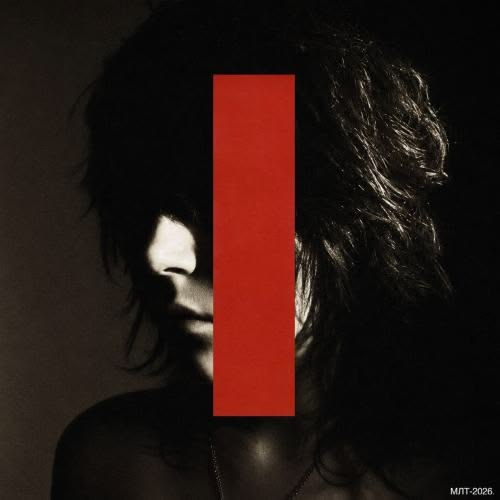
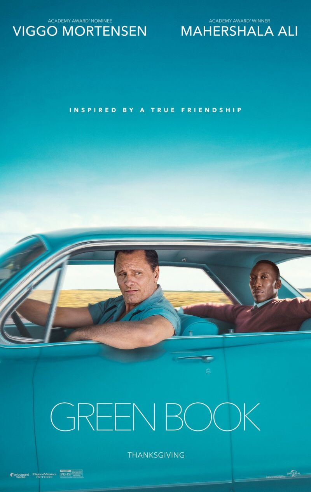
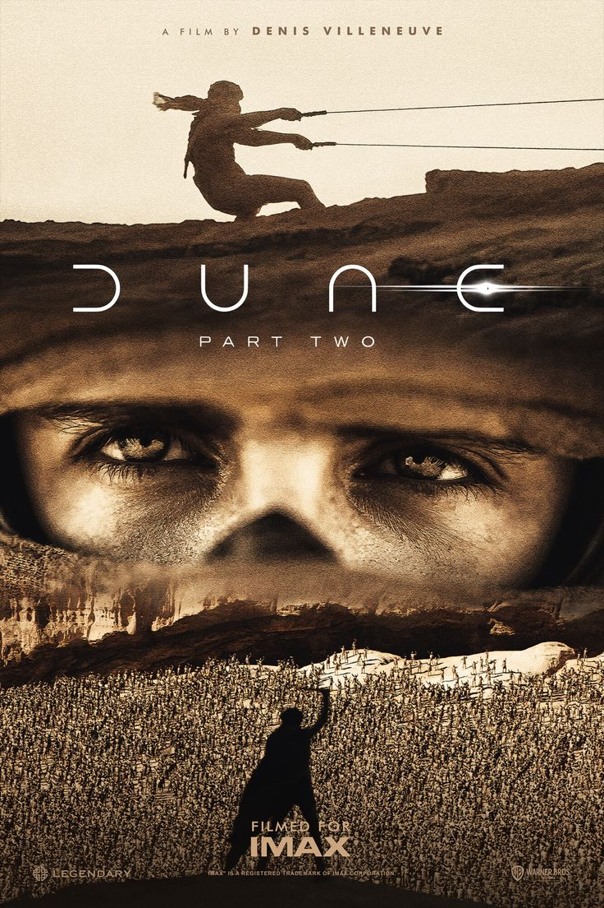

Музыка

ВШЭ / разработка игр / LGG Листай дальше
Учусь, объясняю сложное
и собираю своё.
Учусь в НИУ ВШЭ на программе «Профессиональная разработка игр и геймификация бизнес-процессов».
Мне интересно создавать то, с чем людям хочется взаимодействовать.
Работаю репетитором по математике. Вместе с друзьями развиваю нашу онлайн-школу LGG.
Для команды разрабатываю платформу и экосистему: место, где учёба, люди и рабочие процессы складываются в одно целое.
Сначала бассейн. Потом ринг.
Сейчас — в удовольствие.
4 годаначал плавать
7 летпришёл в бокс
до 17 летбокс и плавание
Побеждал и занимал призовые места на всероссийских турнирах и турнирах СНГ по боксу. Спорт был большой частью моей жизни — и остаётся ею.
Сейчас хожу в тренажёрный зал, играю в настольный теннис и увлекаюсь русским бильярдом — просто в своё удовольствие. Ещё хочу научиться играть в большой теннис.
Музыка, кино и игры,
к которым возвращаюсь.







Две игры из моего избранного.
Показано всё избранное
Люблю поездки. Пока мало где был —
тем интереснее то, что впереди.